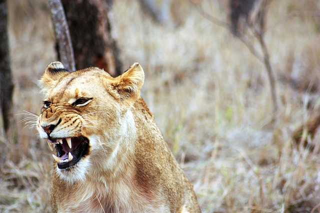

Chapter 3

Tarzan doesn't grow the way the other ape children do. He is smaller and weaker than the other infants in the tribe. His foster father, Tublat, wants Kala to abandon him so they can produce stronger, most useful children, but Kala refuses. The helpless white baby grows into a strong and resourceful 10-year-old who is just as comfortable swinging between the trees as his primate cousins.
It's around this time Tarzan and his "cousin," a young male ape, venture to the lake. Tarzan is distressed by his reflection in the deep waters. He feels ugly compared to his broad-nosed, hairy cousin. He's so busy cataloging his small mouth, blunt teeth, and hairless body that he doesn't hear Sabor, the lioness , preparing to pounce. She lets out a wild roar and leaps into the air.
Tarzan throws himself into the water, but his cousin's reflexes aren't so fast. He becomes lunch. Tarzan calls the rest of the apes from his watery hideout and Sabor slinks away.
Kerchak's tribe is always on the move in search of food, safety, and good weather. Tarzan sleeps in Kala's arms no matter where they stop for the night, giving "the great, hairy beast all the affection that would have belonged to his fair young mother had she lived.
Kerchak's band of apes often hunts and rests near the Claytons' sealed cabin. The apes never venture close to the cabin—the story of the "thunder-stick" is still popular among the tribe—but the building is a constant source of wonder for Tarzan , who spends hours trying to figure out how to get inside.
Lion
COMMON NAME: African Lion
SCIENTIFIC NAME: Panthera leo
TYPE: Mammals
DIET: Carnivore
GROUP NAME: Pride
SIZE: Head and body: 4.5 to 6.5 feet; tail: 26.25 to 39.5 inches
WEIGHT: 265 to 420 pounds
Lions are the only cats that live in groups, which are called prides. Prides are family units that may include up to three males, a dozen or so females, and their young. All of a pride's lionesses are related, and female cubs typically stay with the group as they age. Young males eventually leave and establish their own prides by taking over a group headed by another male.
Help Tarzan dodge the lion's attack
Repeatedly press A and D
Unlike other animals, apes take care of their young for many years. Apes also take much longer to mature than other animals. Some apes can take as long as 12 to 18 years to fully develop into an adult.
Apes are extremely mobile and can swing from tree to tree.

A male lion's roar can be heard from up to five miles away – the loudest roar of any big cat species. Their roar helps them find other lions as well as to proclaim their territory.
Lions can leap as far as 36 feet (11 m).
The leader organizes troop activities like eating, nesting in leaves, and moving about the group's 0.75-to-16-square-mile home range.